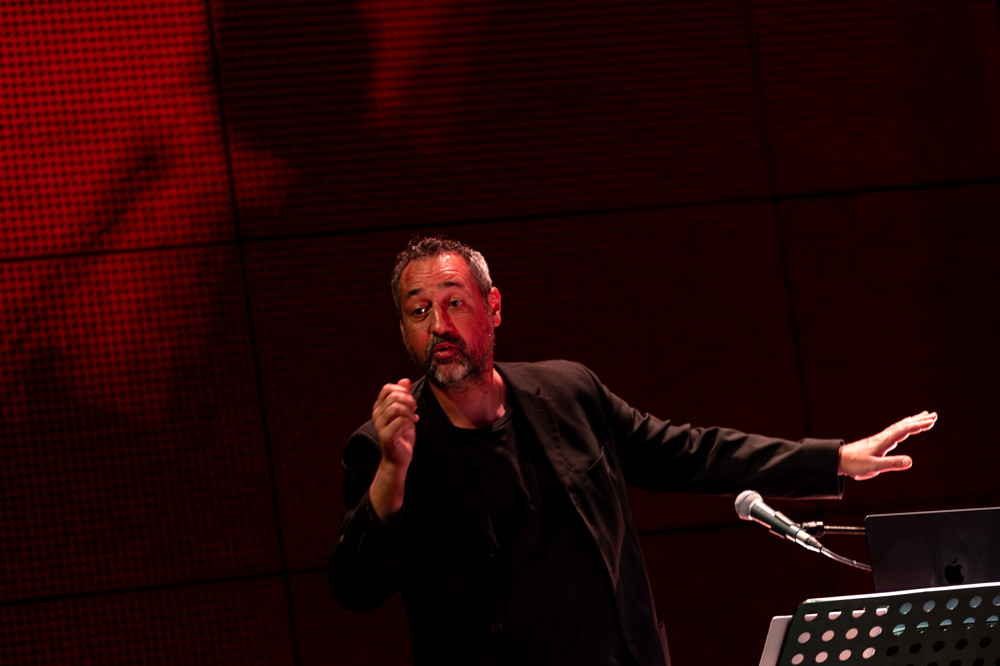

A ideia de misturar ciência e arte nasceu no seio familiar. Primeiro foram textos de prosa, ciência e música. Um ciclo de autoincremento em que definições de termos científicos davam origem a pequenos textos literários, que por sua vez "lembravam" uma música conhecida de todos. A Noite Europeia dos Investigadores, na Fábrica da Ciência Viva da Universidade de Aveiro, foi recebendo estas performances sob a forma de "EnCanto de Investigar". Nessas sessões surgiu a ideia de fazer um talk-show do tipo teatro-musical que abordasse a temática das células estaminais. Houve, necessariamente, alguns"jantares" de comunicação de ciência entre a equipa, para que as ideias estaminais começassem o processo de divisão e diferenciação necessário e após alguns ajustes e com o apoio das instituições a que estamos ligados profissionalmente conseguimos fazer a primeira apresentação em Outubro de 2024. Desde então iniciamos uma tour nacional que conta já com várias apresentações na Casa da Música do Porto, Pavilhão do Conhecimento Ciência Viva de Lisboa, CNEMA Santarém, Conservatório de Música de Coimbra, entre outros.

Ricardo Neves é um cientista, artista e produtor de espetáculos de comunicação de ciência. Doutorou-se em ciências laboratoriais e clínicas pela Universidade de Oxford e é investigador na Universidade de Coimbra, onde tem projetos na área das células estaminais, imunoterapia e cancro. Estudou canto lírico com a professora Maria Ana Flemming no Conservatório Calouste Gulbenkian em Aveiro. Enquanto estudante universitário, fundou e foi solista da Magna Tuna Cartola da Universidade de Aveiro. Foi solista em mais de 100 concertos com orquestras sinfónicas, filarmónicas e ligeiras, e com vários outros projetos, um pouco por todo o país e no estrangeiro. Divide os seus dias de cientista com projetos artísticos e com a comunicação de ciência. Recentemente integrou dois concertos do pianista LANG LANG, um dos melhores pianistas do mundo, nas suas apresentações em Braga e Abu Dhabi, nos Emiratos Árabes Unidos, no âmbito do concerto LANG LANG Plays Disney. Em 2026 integra os espetáculos da Opereta: “A morte do diabo”, baseada em textos de Eça de Queirós onde interpreta o papel de "Satanás".

Estudou Saxofone inicialmente na Associação Cultural e Recreativa Banda Nova de Fermentelos, onde foi professor de saxofone e ainda é executante. Estudou no Conservatório de Música de Aveiro Calouste Gulbenkian e na Escola Superior de Música e das Artes do Espetáculo (ESMAE), no porto, em saxofone/jazz. Aí teve oportunidade de estudar com Abe Rabade, Maria Schneider, Mark Turner, Jacám Manricks, Tony Malaby, Perico Sambeat, entre outros. Atualmente é músico freelancer em vários projetos desde a música tradicional portuguesa ao jazz. É executante/solista na Fanfarra Kaustika, nos Cantautores, na Banda Nova de Fermentelos e na Banda Amizade, Banda Sinfónica de Aveiro. É compositor e arranjador, tendo sido distinguido com uma menção honrosa no concurso de composição para orquestra de sopros do exército/inatel. Produziu composições originais, bem como arranjos, para vários artistas do pop ao rap, passando pelo rock, e banda sinfónica, assim como para big band, onde teve o privilégio de trabalhar com Rui Veloso e Herman José, em concerto.

Licenciada em Línguas e Literaturas Modernas na Variante de Estudos Portugueses, fez parte do projeto cultural “Navio de Espelhos, espaço de cultura”; desenvolveu a iniciativa “Hora de Inglês e Faz de Conta”, para pré. Hoje -- e desde 2006 – faz parte da Fábrica Centro Ciência Viva de Aveiro, onde adora em equipa investigar, criar, escrever, encenar e dinamizar as mais diversas performances de narrativa & ciência, concretamente sessões de leitura, Horas do Conto, espetáculos, workshops, para público escolar de todas os ciclos de ensino e público geral e familiar. Partilha momentos de comunicação em ciência, em que, com enorme liberdade criativa alia artes e rigores de protocolo, convicta que, assim, melhor se saboreia e apreende o Mundo.

Formado em Educação Visual pela Escola Superior de Educação de Coimbra, envolve- se desde cedo em projectos artísticos. É músico multi-instrumentista, ligado à música popular e aos seus instrumentos, a qual recria cruzando as sonoridades tradicionais com instrumentos elétricos. Integrou projectos musicais nacionais e internacionais. É membro do grupo Galandum Galundaina. Integrou espectáculos de teatro musical, do Serviço Educativo da Casa da Música do Porto, onde também integrou o 18º Curso de Formação de Animadores Musicais. É formador na Escola de Palco, da dOrfeu Associação Cultural, na qual já integrou várias criações, e lecciona aulas de guitarra. Nos últimos anos tem desenvolvido trabalho criativo em projectos artísticos de comunidade.

Iniciou estudos musicais aos 6 anos no Conservatório de Tomar e na Filarmónica U. Maçaense. Licenciado em Ensino de Música pela Universidade de Aveiro, concluiu também o Curso no Instituto Zoltán Kodály, Hungria. Desde 2007, colabora na área educativa da Casa da Música (Porto), criando e interpretando oficinas, espetáculos e projetos comunitários. Desde 2012, orienta cursos no Bunka Kaikan Theatre (Tóquio). É professor na ArtJEPCM da Jobra e trabalha com coros desde 2001 como maestro e preparador vocal. Atualmente é Diretor Musical do Orfeão de Águeda. Como coordenador artístico trabalhou com Andrea Bocelli, Lang Lang, Rockin1000, entre outros. Desenvolve trabalho artístico multidisciplinar como diretor, músico, compositor e pedagogo.